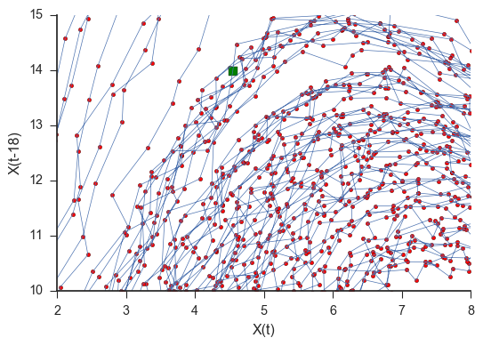

Near Neighbors¶
At the heart of emperical dynamic modeling is the `k-nearest neighbors algorithm`_. In fact, the package uses scikit-learn’s `nearest neighbor implementation`_ for efficient calculation of distances and to retrieve the indices of the nearest neighbors. It is a good idea to understand the k-nearest neighbor algorithm before interpreting what this package implements.
For the regression case, we will look at a zoomed in version of the lorenz system that was discussed above. The red dots are the actual points that make up the blue line and the green box is the point that we want to forecast. The trajectory is clockwise.

In this section of the Lorenz attractor, we can see that the red points closest to the green box all follow the same trajectory. If we wanted to forecast this green box, we could grab the closest red point and see where that ends up. We would then say that this is where the green box will end up.
Grabbing more points, however, might prove to be useful since our box lies between a couple of the points. It might be better to average the trajectories of, for example, the three nearest points to make a forecast than just taking the closest one.
It is also possible to imagine that at some point grabbing more and more near neighbors will be detrimental to the forecast as the points that we will be grabbing will have wildly different trajectories. For example, grabbing all the points in this subsection of space will show a trajectory to the right which would be a terrible forecast for the green box.
Additionally, we could also think about adding noise to this system as shown in the plot below.
Now it might be useful to grab more points as the trajectories are no longer smooth. Additionally the trajectories are no longer perfectly deterministic. There is an added level of stochasticity which will lower the forecast skill.